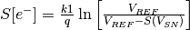
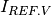
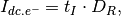
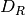
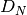
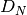
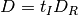
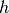
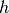

Staring Array Module (rystare)¶
Overview¶
This module provides a high level model for CCD and CMOS staring array signal chain modelling. The model accepts an input image in photon rate irradiance units and then proceeds to calculate the various noise components and signal components along the signal flow chain.
The code in this module serves as an example of implementation of a high-level CCD/CMOS photosensor signal chain model. The model is described in the article ‘High-level numerical simulations of noise in solid-state photosensors: review and tutorial’ by Mikhail Konnik and James Welsh, arXiv:1412.4031v1 [astro-ph.IM]. The code was originally written in Matlab and used for the Adaptive Optics simulations and study of noise propagation in wavefront sensors, but can be used for many other applications involving CCD/CMOS photosensors. The original files are available at:
- Paper: http://arxiv.org/pdf/1412.4031.pdf
- Matlab code: https://bitbucket.org/aorta/highlevelsensorsim
The original Matlab code was ported to Python and extended in a number of ways. The core of the model remains the original Konnik model as implemented in the Matlab code. The Python code was validated against results obtained with the Matlab code, up to a point and then substantially reworked and refactored. During the refactoring due diligence was applied with regression testing, checking the new results against the previous results. The results were communicated and confirmed with Konnik. A number of corrections were also made to Konnik’s original code, some with his cooperation and some without his involvement.
The documentation in the code was copied from Konnik’s Matlab code, so he deserves the credit for the very detailed documentation. His documentation was extracted from the paper quoted above.
The sample Python code (derived from Konnik’s code) in the repository models two different cases
- a simple model: which is completely linear (no non-linearities), where all noise are Gaussian, and without source follower noise,
- an advanced model: which has V/V and V/e non-linearities, Wald or lognormal noise, source follower and sense node noise sources and even ADC non-linearities.
The Python code supports enabling/disabling of key components by using flags.
In the documentation for the Matlab code Konnik expressed the hope “that this model will be useful for somebody, or at least save someone’s time. The model can be (and should be) criticized.” Indeed it has, thanks Mikhail! Konnik quotes George E. P. Box, the famous statistician, and who said that “essentially, all models are wrong, but some are useful”.
Signal Flow¶
The process from incident photons to the digital numbers appearing in the image is outlined in the picture below. The input image must be provided in photon rate irradiance units [q/(s.m2)], with photon noise already present in the image. The count of photons captured in the detector is determined from the irradiance by accounting for the detector area and integration time. Then, the code models the process of conversion from photons to electrons and subsequently to signal voltage. Various noise sources are modelled to derive at a realistic image model. Finally, the ADC converts the voltage signal into digital numbers. The whole process is depicted in the figure below.
{kind=link}
Many noise sources contribute to the resulting noise image that is produced by the sensor. Noise sources can be broadly classified as either fixed-pattern (time-invariant) or temporal (time-variant) noise. Fixed-pattern noise refers to any spatial pattern that does not change significantly from frame to frame. Temporal noise, on the other hand, changes from one frame to the next. All these noise sources are modelled in the code. For more details see Konnik’s original paper or the docstrings present in the code.
Changes to Matlab code¶
- Renamed many, if not all, variables to be more descriptive.
- Created a number of new functions by splitting up the Matlab functions for increased modularity.
- Store (almost) all input and output variables in an HDF5 file for full record keeping.
- Precalculate the image data input as HDF5 files with linear detector parameters embedded in the file. This was done to support future image size calculations. The idea is to embed the target frequency in the data file to relate observed performance with the frequency on the focal plane.
- Moved sourcefollower calcs out from under dark signal flag. sourcefollower noise is now always calculated irrespective of whether dark noise is selected or not.
- Input image now photon rate irradiance q/(m2.s), image should already include photon noise in input. Removed from ccd library: irradiance from radiant to photon units, adding photon shot noise. This functionality has been added to the image generation code.
- Both CCD and CMOS now have fill factors, the user can set CCD fill factor differently from CMOS fill factor. The fill factor value is used as-in in the rest of the code, without checking for CCD or CMOS. This is done because CCD fill factor is 1.0 for full frame sensors but can be less than 1.0 for other types of CCD.
- Now uses SciPy’s CODATA constants where these are available.
- Put all of the code into a single file rystare.py in the pyradi repository.
- Minor changes to Konnik’s excellent documentation to be Sphinx compatible. Documentation is now generated as part of the pyradi documentation.
Example Code¶
The two examples provided by Konnik are merged into a single code, with flags to select between the two options. The code is found at the end of the module file in the __main__ part of the module file. Set doTest = ‘Simple’ or doTest = ‘Advanced’ depending on which model. Either example will run the photosensor function (all functions are thoroughly documented in the Python code, thanks Mikhail!).
The two prepared image files are both 256x256 in size. New images can be generated following the example shown in the __main__ part of the rystare.py module file (use the function create_HDF5_image as a starting point to develop your own).
The easiest way to run the code is to open a command window in the installation directory and run the run_example function in the module code. This will load the module and execute the example code function. Running the example code function will create files with names similar to PSOutput.hdf5 and PSOutput.txt. To run the example, create a python file with the following contents and run it at the command line prompt:
import pyradi.rystare as rystare
rystare.run_example('Advanced','Output', doPlots=True, doHisto=True, doImages=True)
rystare.run_example('Simple','Output', doPlots=True, doHisto=True, doImages=True)
By setting all the flags to True the example code will print a number of images to file. Plotting the results to file takes a while. Execution is much faster with all flags set to False.
Study the text file using a normal text editor and study the HDF5 file by using the viewer available from https://www.hdfgroup.org/products/java/hdfview/.
Some time in future an IPython notebook will be released on https://github.com/NelisW/ComputationalRadiometry.
The full code for the example file is as follows:
#prepare so long for Python 3
from __future__ import division
from __future__ import print_function
from __future__ import unicode_literals
import numpy as np
import re
import os.path
from matplotlib import cm as mcm
import matplotlib.mlab as mlab
import pyradi.rystare as rystare
import pyradi.ryplot as ryplot
import pyradi.ryfiles as ryfiles
import pyradi.ryutils as ryutils
"""This file provides examples of use of the CcdCmosSim models for a CMOS/CCD photosensor.
Two models are provided 'simple' and 'advanced'
Author: Mikhail V. Konnik, revised/ported by CJ Willers
Original source: http://arxiv.org/pdf/1412.4031.pdf
"""
#set up the parameters for this run
doPlots=True
doHisto=True
doImages=True
outfilename = 'Output'
pathtoimage = 'W:/MyApps/pyradi/pyradi/data/image-Disk-256-256.hdf5'
doTest = 'Simple'
doTest = 'Advanced'
if doTest in ['Simple']:
prefix = 'PS'
elif doTest in ['Advanced']:
prefix = 'PA'
else:
exit('Undefined test')
[m, cm, mm, mum, nm, rad, mrad] = rystare.define_metrics()
#open the file to create data structure and store the results, remove if exists
hdffilename = '{}{}.hdf5'.format(prefix, outfilename)
if os.path.isfile(hdffilename):
os.remove(hdffilename)
strh5 = ryfiles.open_HDF(hdffilename)
#sensor parameters
strh5['rystare/SensorType'] = 'CCD' # must be in capitals
#strh5['rystare/SensorType'] = 'CMOS' # must be in capitals
# full-frame CCD sensors has 100% fil factor (Janesick: 'Scientific Charge-Coupled Devices')
if strh5['rystare/SensorType'].value in ['CMOS']:
strh5['rystare/FillFactor'] = 0.5 # Pixel Fill Factor for CMOS photo sensors.
else:
strh5['rystare/FillFactor'] = 1.0 # Pixel Fill Factor for full-frame CCD photo sensors.
strh5['rystare/IntegrationTime'] = 0.01 # Exposure/Integration time, [sec].
strh5['rystare/ExternalQuantumEff'] = 0.8 # external quantum efficiency, fraction not reflected.
strh5['rystare/QuantumYield'] = 1. # number of electrons absorbed per one photon into material bulk
strh5['rystare/FullWellElectrons'] = 2e4 # full well of the pixel (how many electrons can be stored in one pixel), [e]
strh5['rystare/SenseResetVref'] = 3.1 # Reference voltage to reset the sense node. [V] typically 3-10 V.
#sensor noise
strh5['rystare/SenseNodeGain'] = 5e-6 # Sense node gain, A_SN [V/e]
#source follower
strh5['rystare/SourceFollowerGain'] = 1. # Source follower gain, [V/V], lower means amplify the noise.
# Correlated Double Sampling (CDS)
strh5['rystare/CDS-Gain'] = 1. # CDS gain, [V/V], lower means amplify the noise.
# Analogue-to-Digital Converter (ADC)
strh5['rystare/ADC-Num-bits'] = 12. # noise is more apparent on high Bits
strh5['rystare/ADC-Offset'] = 0. # Offset of the ADC, in DN
# Light Noise parameters
strh5['rystare/flag/photonshotnoise'] = True #photon shot noise.
# photo response non-uniformity noise (PRNU), or also called light Fixed Pattern Noise (light FPN)
strh5['rystare/flag/PRNU'] = True
strh5['rystare/noise/PRNU/seed'] = 362436069
strh5['rystare/noise/PRNU/model'] = 'Janesick-Gaussian'
strh5['rystare/noise/PRNU/parameters'] = [] # see matlab filter or scipy lfilter functions for details
strh5['rystare/noise/PRNU/factor'] = 0.01 # PRNU factor in percent [typically about 1\% for CCD and up to 5% for CMOS];
# Dark Current Noise parameters
strh5['rystare/flag/darkcurrent'] = True
strh5['rystare/OperatingTemperature'] = 300. # operating temperature, [K]
strh5['rystare/DarkFigureMerit'] = 1. # dark current figure of merit, [nA/cm2]. For very poor sensors, add DFM
# Increasing the DFM more than 10 results to (with the same exposure time of 10^-6):
# Hence the DFM increases the standard deviation and does not affect the mean value.
strh5['rystare/DarkCurrentElecrons'] = 0. #to be computed
# dark current shot noise
strh5['rystare/flag/DarkCurrent-DShot'] = True
#dark current Fixed Pattern Noise
strh5['rystare/flag/DarkCurrentDarkFPN-Pixel'] = True
# Janesick's book: dark current FPN quality factor is typically between 10\% and 40\% for CCD and CMOS sensors
strh5['rystare/noise/darkFPN/DN'] = 0.3
strh5['rystare/noise/darkFPN/seed'] = 362436128
strh5['rystare/noise/darkFPN/limitnegative'] = True # only used with 'Janesick-Gaussian'
if doTest in ['Simple']:
strh5['rystare/noise/darkFPN/model'] = 'Janesick-Gaussian'
strh5['rystare/noise/darkFPN/parameters'] = []; # see matlab filter or scipy lfilter functions for details
elif doTest in ['Advanced']:
strh5['rystare/noise/darkFPN/model'] = 'LogNormal' #suitable for long exposures
strh5['rystare/noise/darkFPN/parameters'] = [0., 0.4] #first is lognorm_mu; second is lognorm_sigma.
else:
pass
# #alternative model
# strh5['rystare/noise/darkFPN/model'] = 'Wald'
# strh5['rystare/noise/darkFPN/parameters'] = 2. #small parameters (w<1) produces extremely narrow distribution, large parameters (w>10) produces distribution with large tail.
# #alternative model
# strh5['rystare/noise/darkFPN/model'] = 'AR-ElGamal'
# strh5['rystare/noise/darkFPN/parameters'] = [1., 0.5] # see matlab filter or scipy lfilter functions for details
#dark current Offset Fixed Pattern Noise
strh5['rystare/flag/darkcurrent_offsetFPN'] = True
strh5['rystare/noise/darkFPN_offset/model'] = 'Janesick-Gaussian'
strh5['rystare/noise/darkFPN_offset/parameters'] = [] # see matlab filter or scipy lfilter functions for details
strh5['rystare/noise/darkFPN_offset/DNcolumn'] = 0.0005 # percentage of (V_REF - V_SN)
# Source Follower VV non-linearity
strh5['rystare/flag/VVnonlinearity'] = False
#ADC
strh5['rystare/flag/ADCnonlinearity'] = 0
strh5['rystare/ADC-Gain'] = 0.
if doTest in ['Simple']:
strh5['rystare/flag/sourcefollowernoise'] = False
elif doTest in ['Advanced']:
#source follower noise.
strh5['rystare/flag/sourcefollowernoise'] = True
strh5['rystare/noise/sf/CDS-SampleToSamplingTime'] = 1e-6 #CDS sample-to-sampling time [sec].
strh5['rystare/noise/sf/flickerCornerHz'] = 1e6 #flicker noise corner frequency $f_c$ in [Hz], where power spectrum of white and flicker noise are equal [Hz].
strh5['rystare/noise/sf/dataClockSpeed'] = 20e6 #MHz data rate clocking speed.
strh5['rystare/noise/sf/WhiteNoiseDensity'] = 15e-9 #thermal white noise [\f$V/Hz^{1/2}\f$, typically \f$15 nV/Hz^{1/2}\f$ ]
strh5['rystare/noise/sf/DeltaIModulation'] = 1e-8 #[A] source follower current modulation induced by RTS [CMOS ONLY]
strh5['rystare/noise/sf/FreqSamplingDelta'] = 10000. #sampling spacing for the frequencies (e.g., sample every 10kHz);
else:
pass
#charge to voltage
strh5['rystare/flag/Venonlinearity'] = False
#sense node reset noise.
strh5['rystare/sn/V-FW'] = 0.
strh5['rystare/sn/V-min'] = 0.
strh5['rystare/sn/C-SN'] = 0.
strh5['rystare/flag/SenseNodeResetNoise'] = True
strh5['rystare/noise/sn/ResetKTC-Sigma'] = 0.
strh5['rystare/noise/sn/ResetFactor'] = 0.8 # the compensation factor of the Sense Node Reset Noise:
# 1 - no compensation from CDS for Sense node reset noise.
# 0 - fully compensated SN reset noise by CDS.
#Sensor noises and signal visualisation
strh5['rystare/flag/plots/doPlots'] = False
strh5['rystare/flag/plots/plotLogs'] = False
# strh5['rystare/flag/plots/irradiance'] = True
# strh5['rystare/flag/plots/electrons'] = True
# strh5['rystare/flag/plots/volts'] = True
# strh5['rystare/flag/plots/DN'] = True
# strh5['rystare/flag/plots/SignalLight'] = True
# strh5['rystare/flag/plots/SignalDark'] = True
#For testing and measurements only:
strh5['rystare/flag/darkframe'] = False # True if no signal, only dark
#=============================================================================
if strh5['rystare/flag/darkframe'].value: # we have zero light illumination
hdffilename = 'data/image-Zero-256-256.hdf5'
else: # load an image, nonzero illumination
hdffilename = 'data/image-Disk-256-256.hdf5'
if pathtoimage is None:
pathtoimage = os.path.dirname(__file__) + '/' + hdffilename
imghd5 = ryfiles.open_HDF(pathtoimage)
#images must be in photon rate irradiance units q/(m2.s)
strh5['rystare/SignalPhotonRateIrradiance'] = imghd5['image/PhotonRateIrradiance'].value
strh5['rystare/pixelPitch'] = imghd5['image/pixelPitch'].value
strh5['rystare/imageName'] = imghd5['image/imageName'].value
strh5['rystare/imageSizePixels'] = imghd5['image/imageSizePixels'].value
#calculate the noise and final images
strh5 = rystare.photosensor(strh5) # here the Photon-to-electron conversion occurred.
with open('{}{}.txt'.format(prefix,outfilename), 'wt') as fo:
fo.write('{:25}, {:.5e}, {:.5e}\n'.format('SignalPhotonRateIrradiance',np.mean(strh5['rystare/SignalPhotonRateIrradiance'].value), np.var(strh5['rystare/SignalPhotonRateIrradiance'].value)))
fo.write('{:25}, {:.5e}, {:.5e}\n'.format('signalLight',np.mean(strh5['rystare/signalLight'].value), np.var(strh5['rystare/signalLight'].value)))
fo.write('{:25}, {:.5e}, {:.5e}\n'.format('signalDark',np.mean(strh5['rystare/signalDark'].value), np.var(strh5['rystare/signalDark'].value)))
fo.write('{:25}, {:.5e}, {:.5e}\n'.format('source_follower_noise',np.mean(strh5['rystare/noise/sf/source_follower_noise'].value), np.var(strh5['rystare/noise/sf/source_follower_noise'].value)))
fo.write('{:25}, {:.5e}, {:.5e}\n'.format('SignalPhotons',np.mean(strh5['rystare/SignalPhotons'].value), np.var(strh5['rystare/SignalPhotons'].value)))
fo.write('{:25}, {:.5e}, {:.5e}\n'.format('SignalElectrons',np.mean(strh5['rystare/SignalElectrons'].value), np.var(strh5['rystare/SignalElectrons'].value)))
fo.write('{:25}, {:.5e}, {:.5e}\n'.format('SignalVoltage',np.mean(strh5['rystare/SignalVoltage'].value), np.var(strh5['rystare/SignalVoltage'].value)))
fo.write('{:25}, {:.5e}, {:.5e}\n'.format('SignalDN',np.mean(strh5['rystare/SignalDN'].value), np.var(strh5['rystare/SignalDN'].value)))
if doPlots:
lstimgs = ['rystare/SignalPhotonRateIrradiance','rystare/SignalPhotons','rystare/SignalElectrons','rystare/SignalVoltage',
'rystare/SignalDN','rystare/signalLight','rystare/signalDark', 'rystare/noise/PRNU/nonuniformity',
'rystare/noise/darkFPN/nonuniformity']
# ryfiles.plotHDF5Images(strh5, prefix=prefix, colormap=mcm.gray, lstimgs=lstimgs, logscale=strh5['rystare/flag/plots/plotLogs'].value)
ryfiles.plotHDF5Images(strh5, prefix=prefix, colormap=mcm.jet, lstimgs=lstimgs, logscale=strh5['rystare/flag/plots/plotLogs'].value)
if doHisto:
lstimgs = ['rystare/SignalPhotonRateIrradiance','rystare/SignalPhotons','rystare/SignalElectrons','rystare/SignalVoltage',
'rystare/SignalDN','rystare/signalLight','rystare/signalDark',
'rystare/noise/PRNU/nonuniformity','rystare/noise/darkFPN/nonuniformity']
ryfiles.plotHDF5Histograms(strh5, prefix, bins=100, lstimgs=lstimgs)
if doImages:
lstimgs = ['rystare/SignalPhotonRateIrradiance','rystare/SignalPhotonRate', 'rystare/SignalPhotons','rystare/SignalElectrons','rystare/SignalVoltage',
'rystare/SignalDN','rystare/signalLight','rystare/signalDark', 'rystare/noise/sn_reset/noisematrix','rystare/noise/sf/source_follower_noise',
'rystare/noise/PRNU/nonuniformity','rystare/noise/darkFPN/nonuniformity']
ryfiles.plotHDF5Bitmaps(strh5, prefix, format='png', lstimgs=lstimgs)
strh5.flush()
strh5.close()
HDF5 File¶
The Python implementation of the model uses an HDF5 file to capture the input and output data for record keeping or subsequent analysis. HDF5 files provide for hierarchical data structures and easy read/save to disk. See the file hdf5-as-data-format.md ([hdf5asdataformat]) in the pyradi root directory for more detail.
Input images are written to and read from HDF5 files as well. These files store the image as well as the images’ dimensional scaling in the focal plane. The intent is to later create test targets with specific spatial frequencies in these files.
Code Overview¶
This module provides a high level model for CCD and CMOS staring array signal chain modelling. The work is based on a paper and Matlab code by Mikhail Konnik, available at:
- Paper available at: http://arxiv.org/pdf/1412.4031.pdf
- Matlab code available at: https://bitbucket.org/aorta/highlevelsensorsim
See the documentation at http://nelisw.github.io/pyradi-docs/_build/html/index.html or pyradi/doc/rystare.rst for more detail.
Module functions¶
-
pyradi.rystare.photosensor(strh5)¶ This routine simulates the behaviour of a CCD/CMOS sensor, performing the conversion from irradiance to electrons, then volts, and then digital numbers.
The process from incident photons to the digital numbers appeared on the image is outlined. First of all, the radiometry is considered. Then, the process of conversion from photons to electrons is outlined. Following that, conversion from electrons to voltage is described. Finally, the ADC converts the voltage signal into digital numbers. The whole process is depicted on Figure below.
Many noise sources contribute to the resulting noise image that is produced by photosensors. Noise sources can be broadly classified as either fixed-pattern (time-invariant) or temporal (time-variant) noise. Fixed-pattern noise refers to any spatial pattern that does not change significantly from frame to frame. Temporal noise, on the other hand, changes from one frame to the next.
Note that in the sequence below we add signal and noise signals linearly together. For uncorrelated noise sources, the noise power values are added in quadrature, but that does not apply here, because we are adding instantaneous noise values (per pixel) so that these noise and signal values add linearly.
- Args:
- strh5 (hdf5 file): hdf5 file that defines all simulation parameters
- Returns:
- in strh5: (hdf5 file) updated data fields
- Raises:
- No exception is raised.
Author: Mikhail V. Konnik, revised/ported by CJ Willers
Original source: http://arxiv.org/pdf/1412.4031.pdf
-
pyradi.rystare.set_photosensor_constants(strh5)¶ Defining the constants that are necessary for calculation of photon energy, dark current rate, etc.
- Args:
- strh5 (hdf5 file): hdf5 file that defines all simulation parameters
- Returns:
- in strh5: (hdf5 file) updated data fields
- Raises:
- No exception is raised.
Author: Mikhail V. Konnik, revised/ported by CJ Willers
Original source: http://arxiv.org/pdf/1412.4031.pdf
-
pyradi.rystare.check_create_datasets(strh5)¶ Create the arrays to store the various image-sized variables.
- Args:
- strh5 (hdf5 file): hdf5 file that defines all simulation parameters
- Returns:
- in strh5: (hdf5 file) updated data fields
- Raises:
- No exception is raised.
Author: Mikhail V. Konnik, revised/ported by CJ Willers
Original source: http://arxiv.org/pdf/1412.4031.pdf
-
pyradi.rystare.source_follower(strh5)¶ The amplification of the voltage from Sense Node by Source Follower.
Conventional sensor use a floating-diffusion sense node followed by a charge-to-voltage amplifier, such as a source follower.
Source follower is one of basic single-stage field effect transistor (FET) amplifier topologies that is typically used as a voltage buffer. In such a circuit, the gate terminal of the transistor serves as the input, the source is the output, and the drain is common to both input and output. At low frequencies, the source follower has voltage gain:
Source follower is a voltage follower, its gain is less than 1. Source followers are used to preserve the linear relationship between incident light, generated photoelectrons and the output voltage.
The V/V non-linearity affect shot noise (but does not affect FPN curve) and can cause some shot-noise probability density compression. The V/V non-linearity non-linearity is caused by non-linear response in ADC or source follower.
The V/V non-linearity can be simulated as a change in source follower gain as a linear function of signal:
where and is a non-linearity ratio of . In the simulation we assume and i.e. 5% of non-linearity of . Then the voltage is multiplied on the new sense node gain :
After that, the voltage goes to ADC for quantisation to digital numbers.
- Args:
- strh5 (hdf5 file): hdf5 file that defines all simulation parameters
- Returns:
- in strh5: (hdf5 file) updated data fields
- Raises:
- No exception is raised.
Author: Mikhail V. Konnik, revised/ported by CJ Willers
Original source: http://arxiv.org/pdf/1412.4031.pdf
{kind=link}
-
pyradi.rystare.fixed_pattern_offset(strh5)¶ Add dark fixed pattens offset
- Args:
- strh5 (hdf5 file): hdf5 file that defines all simulation parameters
- Returns:
- in strh5: (hdf5 file) updated data fields
- Raises:
- No exception is raised.
Author: Mikhail V. Konnik, revised/ported by CJ Willers
Original source: http://arxiv.org/pdf/1412.4031.pdf
-
pyradi.rystare.cds(strh5)¶ Reducing the noise by Correlated Double Sampling, but right now the routine just adds the noise.
Correlated Double Sampling (CDS) is a technique for measuring photo voltage values that removes an undesired noise. The sensor’s output is measured twice. Correlated Double Sampling is used for compensation of Fixed pattern noise caused by dark current leakage, irregular pixel converters and the like. It appears on the same pixels at different times when images are taken. It can be suppressed with noise reduction and on-chip noise reduction technology. The main approach is CDS, having one light signal read by two circuits.
In CDS, a circuit measures the difference between the reset voltage and the signal voltage for each pixel, and assigns the resulting value of charge to the pixel. The additional step of measuring the output node reference voltage before each pixel charge is transferred makes it unnecessary to reset to the same level for each pixel.
First, only the noise is read. Next, it is read in combination with the light signal. When the noise component is subtracted from the combined signal, the fixed-pattern noise can be eliminated.
CDS is commonly used in image sensors to reduce FPN and reset noise. CDS only reduces offset FPN (gain FPN cannot be reduced using CDS). CDS in CCDs, PPS, and photogate APS, CDS reduces reset noise, in photodiode APS it increases it See Janesick’s book and especially El Gamal’s lectures.
- Args:
- strh5 (hdf5 file): hdf5 file that defines all simulation parameters
- Returns:
- in strh5: (hdf5 file) updated data fields
- Raises:
- No exception is raised.
Author: Mikhail V. Konnik, revised/ported by CJ Willers
Original source: http://arxiv.org/pdf/1412.4031.pdf
-
pyradi.rystare.adc(strh5)¶ An analogue-to-digital converter (ADC) transforms a voltage signal into discrete codes.
An analogue-to-digital converter (ADC) transforms a voltage signal into discrete codes. An
 -bit ADC has possible output codes with the difference between code
being
-bit ADC has possible output codes with the difference between code
being  . The resolution of the ADC indicates the number of
discrete values that can be produced over the range of analogue values and can
be expressed as:
. The resolution of the ADC indicates the number of
discrete values that can be produced over the range of analogue values and can
be expressed as:where is the maximum voltage that can be quantified, is minimum quantifiable voltage, and is the number of voltage intervals. Therefore, the output of an ADC can be represented as:
The lower the reference voltage , the smaller the range of the voltages one can measure.
After the electron matrix has been converted to voltages, the sense node reset noise and offset FPN noise are added, the V/V gain non-linearity is applied (if desired), the ADC non-linearity is applied (if necessary). Finally the result is multiplied by ADC gain and rounded to produce the signal as a digital number:
where is the total voltage signal accumulated during one frame acquisition, is the maximum voltage that can be quantified by an ADC, and
 is the total voltage signal
accumulated by the end of the exposure (integration) time and conversion.
Usually after the optional V/V non-linearity is applied. In
this case, the conversion from voltages to digital signal is linear. The
adcnonlinearity “non-linear ADC case is considered below”.
is the total voltage signal
accumulated by the end of the exposure (integration) time and conversion.
Usually after the optional V/V non-linearity is applied. In
this case, the conversion from voltages to digital signal is linear. The
adcnonlinearity “non-linear ADC case is considered below”.In terms of the ADC, the following non-linearity and noise should be considered for the simulations of the photosensors: Integral Linearity Error, Differential Linearity Error, quantisation error, and ADC offset.
The DLE indicates the deviation from the ideal 1 LSB (Least Significant Bit) step size of the analogue input signal corresponding to a code-to-code increment. Assume that the voltage that corresponds to a step of 1 LSB is . In the ideal case, a change in the input voltage of causes a change in the digital code of 1 LSB. If an input voltage that is more than is required to change a digital code by 1 LSB, then the ADC has DLE error. In this case, the digital output remains constant when the input voltage changes from, for example, to , therefore corresponding the digital code can never appear at the output. That is, that code is missing.

In the illustration above, each input step should be precisely 1/8 of reference voltage. The first code transition from 000 to 001 is caused by an input change of 1 LSB as it should be. The second transition, from 001 to 010, has an input change that is 1.2 LSB, so is too large by 0.2 LSB. The input change for the third transition is exactly the right size. The digital output remains constant when the input voltage changes from 4 LSB to 5 LSB, therefore the code 101 can never appear at the output.
The ILE is the maximum deviation of the input/output characteristic from a straight line passed through its end points. For each voltage in the ADC input, there is a corresponding code at the ADC output. If an ADC transfer function is ideal, the steps are perfectly superimposed on a line. However, most real ADC’s exhibit deviation from the straight line, which can be expressed in percentage of the reference voltage or in LSBs. Therefore, ILE is a measure of the straightness of the transfer function and can be greater than the differential non-linearity. Taking the ILE into account is important because it cannot be calibrated out.
For each voltage in the ADC input there is a corresponding word at the ADC output. If an ADC is ideal, the steps are perfectly superimposed on a line. But most of real ADC exhibit deviation from the straight line, which can be expressed in percentage of the reference voltage or in LSBs.
In our model, we simulate the Integral Linearity Error (ILE) of the ADC as a dependency of ADC gain on the signal value. Denote as an ADC non-linearity ratio (e.g., ). The linear ADC gain can be calculated from Eq.~ref{eq:kadc} as and used as . The non-linearity coefficient is calculated as:
where is the maximum voltage that can be quantified by an ADC:
where is the linear ADC gain. The new non-linear ADC conversion gain is then used for the simulations.
Quantisation errors are caused by the rounding, since an ADC has a finite precision. The probability distribution of quantisation noise is generally assumed to be uniform. Hence we use the uniform distribution to model the rounding errors.
It is assumed that the quantisation error is uniformly distributed between -0.5 and +0.5 of the LSB and uncorrelated with the signal. Denote the quantising step of the ADC. For the ideal DC, the quantisation noise is:
If then the quantisation noise is DN. The quantisation error has a uniform distribution. We do not assume any particular architecture of the ADC in our high-level sensor model. This routine performs analogue-to-digital convertation of volts to DN.
- Args:
- strh5 (hdf5 file): hdf5 file that defines all simulation parameters
- Returns:
- in strh5: (hdf5 file) updated data fields
- Raises:
- No exception is raised.
Author: Mikhail V. Konnik, revised/ported by CJ Willers
Original source: http://arxiv.org/pdf/1412.4031.pdf
{kind=link}
-
pyradi.rystare.charge_to_voltage(strh5)¶ The charge to voltage conversion occurs inside this routine
V/e nonlinearity is small for CCD detetors, but can be very high for some CMOS architectures (up to 200%) [from Janesick p87]A new matrix strh5[‘rystare/signal/voltage’] is created and the raw voltage signal is stored.
After the charge is generated in the pixel by photo-effect, it is moved row-by-row to the sense amplifier that is separated from the pixels in case of CCD. The packets of charge are being shifted to the output sense node, where electrons are converted to voltage. The typical sense node region is presented on Figure below.
Sense node is the final collecting point at the end of the horizontal register of the CCD sensor. The CCD pixels are made with MOS devices used as reverse biased capacitors. The charge is readout by a MOSFET based charge to voltage amplifier. The output voltage is inversely proportional to the sense node capacitor. Typical example is that the sense node capacitor of the order , which produces a gain of . It is also important to minimize the noise of the output amplifier, textbf{typically the largest noise source in the system}. Sense node converts charge to voltage with typical sensitivities .
The charge collected in each pixel of a sensor array is converted to voltage by sense capacitor and source-follower amplifier.
Reset noise is induced during such conversion. Prior to the measurement of each pixel’s charge, the CCD sense capacitor is reset to a reference level. Sense node converts charge to voltage with typical sensitivities . The charge collected in each pixel of a sensor array is converted to voltage by sense capacitor and source-follower amplifier. Reset noise is induced during such conversion. Prior to the measurement of each pixel’s charge, the CCD sense node capacitor is reset to a reference level.
Sense Node gain non-linearity, or V/e non-linearity
The V/ non-linearity affect both FPN and shot noise and can cause some shot-noise probability density compression. This type of non-linearity is due to sense node gain non-linearity. Then sense node sensitivity became non-linear (see Janesick’s book):
The V/ non-linearity can be expressed as a non-linear dependency of signals in electron and a sense-node voltage:

The V/ non-linearity affects photon shot noise and skews the distribution, however this is a minor effect. The V/ non-linearity can also be thought as a sense node capacitor non-linearity: when a small signal is measured, is fixed or changes negligible; on the other hand,
 changes significantly and that can affect the signal being
measured.
changes significantly and that can affect the signal being
measured.For the simulation purpose, the V/ non-linearity can be expressed as:
![V_{SN} = V_{REF} - S(V_{SN}) = V_{REF}\exp\left[ - \frac{\alpha\cdot S[e^-]\cdot q }{k1} \right]](_images/math/5c80959cac473b891325106b598a6381d08cbbfc.png)
where and
 is the charge of an electron, and
is the charge of an electron, and  is the coefficient of
non-linearity strength. The capacitance is given by C = k1/V
is the coefficient of
non-linearity strength. The capacitance is given by C = k1/V- Args:
- strh5 (hdf5 file): hdf5 file that defines all simulation parameters
- Returns:
- in strh5: (hdf5 file) updated data fields
- Raises:
- No exception is raised.
Author: Mikhail V. Konnik, revised/ported by CJ Willers
Original source: http://arxiv.org/pdf/1412.4031.pdf
{kind=link}
-
pyradi.rystare.sense_node_reset_noise(strh5)¶ This routine calculates the noise standard deviation for the sense node reset noise.
Sense node Reset noise (kTC noise)
Prior to the measurement of each pixel’s charge packet, the sense node capacitor is reset to a reference voltage level. Noise is generated at the sense node by an uncertainty in the reference voltage level due to thermal variations in the channel resistance of the MOSFET reset transistor. The reference level of the sense capacitor is therefore different from pixel to pixel.
Because reset noise can be significant (about 50 rms electrons), most high-performance photosensors incorporate a noise-reduction mechanism such as correlated double sampling (CDS).
kTC noise occurs in CMOS sensors, while for CCD sensors the sense node reset noise is removed~ (see Janesick’s book) by Correlated Double Sampling (CDS). Random fluctuations of charge on the sense node during the reset stage result in a corresponding photodiode reset voltage fluctuation. The sense node reset noise (in volt units) is given by:
By the relationship Q=CV it can be shown that the kTC noise can be expressed as electron count by

see also https://en.wikipedia.org/wiki/Johnson%E2%80%93Nyquist_noise
The simulation of the sense node reset noise may be performed as an addition of non-symmetric probability distribution to the reference voltage . However, the form of distribution depends on the sensor’s architecture and the reset technique. An Inverse-Gaussian distribution can be used for the simulation of kTC noise that corresponds to a hard reset technique in the CMOS sensor, and the Log-Normal distribution can be used for soft-reset technique. The sense node reset noise can be simulated for each
 -th pixel
for the soft-reset case as:
-th pixel
for the soft-reset case as:then added to the matrix  in Volts that corresponds to the reference voltage.
Note: For CCD, the sense node reset noise is entirely removed by CDS.
Note: In CMOS photosensors, it is difficult to remove the reset noise for the specific CMOS pixels architectures even after application of CDS. Specifically, the difficulties arise in ‘rolling shutter’ and ‘snap’ readout modes. The reset noise is increasing after CDS by a factor of . Elimination of reset noise in CMOS is quite challenging.
- Args:
- strh5 (hdf5 file): hdf5 file that defines all simulation parameters
- Returns:
- in strh5: (hdf5 file) updated data fields
- Raises:
- No exception is raised.
Author: Mikhail V. Konnik, revised/ported by CJ Willers
Original source: http://arxiv.org/pdf/1412.4031.pdf
-
pyradi.rystare.dark_current_and_dark_noises(strh5)¶ This routine for adding dark current signals and noise, including dark FPN and dark shot noise.
This model is taken from Janesick’s ‘Photon Transfer’ book, page 168, which in turn is taken from Janesick’s ‘Scientific Charge-Coupled Devices’ book, page 622.
The dark signal is calculated for all pixels in the model. It is implemented using ones function in MATLAB as a matrix of the same size as the simulated photosensor. For each
-th pixel we have:
where  is the average dark current (originally derived for silicon):
![D_R = 2.55\cdot10^{15}P_A D_{FM} T^{1.5} \exp\left[-\frac{E_{gap}}{2\cdot k\cdot T}\right],](_images/math/60a3326c129434419558d14bb8d00929917ae04c.png)
where: is in units of [e-1/s], is the pixel’s area [cm2]; is the dark current figure-of-merit in units of [nA/cm2] at 300K, varies significantly with detector material and sensor manufacturer, and used in this simulations as 0.5 nA/cm2 for silicon; is the bandgap energy of the semiconductor which also varies with temperature;
 is Boltzman’s constant that is
is Boltzman’s constant that is The relationship between band gap energy and temperature can be described by Varshni’s empirical expression,
where ,
and  are material constants. The energy bandgap of
semiconductors tends to decrease as the temperature is increased. This behaviour can be better understood
if one considers that the inter-atomic spacing increases when the amplitude of the atomic vibrations
increases due to the increased thermal energy. This effect is quantified by the linear expansion
coefficient of a material.
are material constants. The energy bandgap of
semiconductors tends to decrease as the temperature is increased. This behaviour can be better understood
if one considers that the inter-atomic spacing increases when the amplitude of the atomic vibrations
increases due to the increased thermal energy. This effect is quantified by the linear expansion
coefficient of a material.- For the Silicon: , [eV/K], and
- [K].
- It appears that fill factor does not apply to dark noise (Janesick book p168 and Konnik’s code
- does not show this).
According to Janesick’s Photon transfer book p169 the dark current FPN standard deviation is around 10% (CCD) and 40% (CMOS) of the dark current. Note that ‘dark’ FPN (DN) is much greater than ‘light’ FPN (PN) by approximately 10 to 40 times.
- Args:
- strh5 (hdf5 file): hdf5 file that defines all simulation parameters
- Returns:
- in strh5: (hdf5 file) updated data fields, current in nA
- Raises:
- No exception is raised.
Author: Mikhail V. Konnik, revised/ported by CJ Willers
Original source: http://arxiv.org/pdf/1412.4031.pdf
-
pyradi.rystare.source_follower_noise(strh5)¶ The source follower noise routine, calculates noise in volts.
The pixel’s source follower noise limits the read noise, however in high-end CCD and CMOS cameras the source follower noise has been driven down to one electron rms. Pixel source follower MOSFET noise consists of three types of noise: - white noise; - flicker noise; - random telegraph noise (RTS). Each type of noise has its own physics that will be briefly sketched below.
Johnson noise (white noise)
Similarly to the reset noise in sense node, the source-follower amplifier MOSFET has a resistance that generates thermal noise whose value is governed by the Johnson white noise equation. It is therefore either referred to as Johnson noise or simply as white noise, since its magnitude is independent of frequency. If the effective resistance is considered to be the output impedance of the source-follower amplifier, the white noise, in volts, is determined by the following equation:
where
is Boltzmann’s constant (J/K),  is temperature [K], refers to the noise power bandwidth [Hz],
and is the output impedance of the source-follower amplifier.
is temperature [K], refers to the noise power bandwidth [Hz],
and is the output impedance of the source-follower amplifier.Flicker noise
The flicker noise is commonly referred to as noise because of its approximate inverse dependence on frequency. For cameras in which pixels are read out at less than approximately 1 megahertz, and with a characteristic noise spectrum, the read noise floor is usually determined by 1/f noise. Note that the noise continues to decrease at this rate until it levels off, at a frequency referred to as the corner frequency. For the typical MOSFET amplifier, the white noise floor occurs at approximately 4.5 .
Prominent sources of noise in an image sensor are pink-coloured noise generated in the photo-diodes and the low-bandwidth analogue operation of MOS transistors due to imperfect contacts between two materials. Flicker noise is generally accepted to originate due to the existence of interface states in the image sensor silicon that turn on and off randomly according to different time constants. All systems exhibiting 1/f behaviour have a similar collection of randomly-switching states. In the MOSFET, the states are traps at the silicon-oxide interface, which arise because of disruptions in the silicon lattice at the surface. The level of noise in a CCD sensor depends on the pixel sampling rate and from certain crystallographic orientations of silicon wafer.
Random Telegraph Signal (RTS) noise
As the CCD and CMOS pixels are shrinking in dimensions, the low-frequency noise increases. In such devices, the low-frequency noise performance is dominated by Random Telegraph Signals (RTS) on top of the 1/f noise. The origin of such an RTS is attributed to the random trapping and de-trapping of mobile charge carriers in traps located in the oxide or at the interface. The RTS is observed in MOSFETs as a fluctuation in the drain current. A pure two-level RTS is represented in the frequency domain by a Lorentzian spectrum.
Mathematically the source follower’s noise power spectrum can be described as:
where
 is the thermal white noise [, typically ], flicker noise
corner frequency
is the thermal white noise [, typically ], flicker noise
corner frequency  in [Hz] (flicker noise corner frequency is the frequency where power spectrum of white and flicker noise are equal),
and the RTS power spectrum is given (see Janesick’s book):
in [Hz] (flicker noise corner frequency is the frequency where power spectrum of white and flicker noise are equal),
and the RTS power spectrum is given (see Janesick’s book):where is the RTS characteristic time constant [sec] and is the source follower current modulation induced by RTS [A].
The source follower noise can be approximated as:
where: - is the source follower noise [e- rms] -
 is the electrical frequency [Hz]
- is the CDS sample-to-sampling time [sec]
- is the CDS dominant time constant (see Janesick’s Scientific CCDs book) usually set as [sec].
is the electrical frequency [Hz]
- is the CDS sample-to-sampling time [sec]
- is the CDS dominant time constant (see Janesick’s Scientific CCDs book) usually set as [sec].The function is the CDS transfer function is (see Janesick’s book):
First term sets the CDS bandwidth for the white noise rejection before sampling takes place through , where is defined as the noise equivalent bandwidth [Hz].
Note: In CCD photosensors, source follower noise is typically limited by the flicker noise.
Note: In CMOS photosensors, source follower noise is typically limited by the RTS noise. As a side note, such subtle kind of noises is visible only on high-end ADC like 16 bit and more.
- Args:
- strh5 (hdf5 file): hdf5 file that defines all simulation parameters
- Returns:
- in strh5: (hdf5 file) updated data fields
- Raises:
- No exception is raised.
Author: Mikhail V. Konnik, revised/ported by CJ Willers
Original source: http://arxiv.org/pdf/1412.4031.pdf
-
pyradi.rystare.multiply_detector_area(strh5)¶ This routine multiplies detector area
The input to the model of the photosensor is assumed to be a matrix that has been converted to electronrate irradiance, corresponding to electron rate [e/(m2.s)]. The electron rate irriance is converted to electron rate into the pixel by accounting for detector area:
where is the area of a pixel [m2].
- Args:
- strh5 (hdf5 file): hdf5 file that defines all simulation parameters
- Returns:
- in strh5: (hdf5 file) updated data fields
- Raises:
- No exception is raised.
Author: Mikhail V. Konnik, revised/ported by CJ Willers
Original source: http://arxiv.org/pdf/1412.4031.pdf
-
pyradi.rystare.multiply_integration_time(strh5)¶ This routine multiplies with integration time
The input to the model of the photosensor is assumed to be a matrix that has been converted to electrons, corresponding to electron rate [e/s]. The electron rate is converted to electron count into the pixel by accounting for detector integration time:
where is integration (exposure) time.
- Args:
- strh5 (hdf5 file): hdf5 file that defines all simulation parameters
- Returns:
- in strh5: (hdf5 file) updated data fields
- Raises:
- No exception is raised.
Author: Mikhail V. Konnik, revised/ported by CJ Willers
Original source: http://arxiv.org/pdf/1412.4031.pdf
-
pyradi.rystare.convert_to_electrons(strh5)¶ This routine converts photon rate irradiance to electron rate irradiance
- Args:
- strh5 (hdf5 file): hdf5 file that defines all simulation parameters
- Returns:
- in strh5: (hdf5 file) updated data fields
- Raises:
- No exception is raised.
Author: Mikhail V. Konnik, revised/ported by CJ Willers
Original source: http://arxiv.org/pdf/1412.4031.pdf
-
pyradi.rystare.shotnoise(sensor_signal_in)¶ This routine adds photon shot noise to the signal of the photosensor that is in photons.
The photon shot noise is due to the random arrival of photons and can be described by a Poisson process. Therefore, for each
-th element of
the matrix that contains the number of collected photons, a photon
shot noise is simulated as a Poisson process  with mean
:
with mean
:We use the ryutils.poissonarray function that generates Poisson random numbers with mean . That is, the number of collected photons in
-th pixel of the simulated photosensor in the matrix is
used as the mean for the generation of Poisson random numbers to
simulate the photon shot noise. The input of the ryutils.poissonarray function will
be the matrix that contains the number of collected photons. The
output will be the matrix , i.e., the signal
with added photon shot noise. The matrix is recalculated
each time the simulations are started, which corresponds to the temporal nature
of the photon shot noise.- Args:
- sensor_signal_in (np.array[N,M]): photon irradiance in, in photons
- Returns:
- sensor_signal_out (np.array[N,M]): photon signal out, in photons
- Raises:
- No exception is raised.
Author: Mikhail V. Konnik, revised/ported by CJ Willers
Original source: http://arxiv.org/pdf/1412.4031.pdf
-
pyradi.rystare.responsivity_FPN_light(strh5)¶ Multiploying the photon signal with the PRNU.
The Photo Response Non-Uniformity (PRNU) is the spatial variation in pixel conversion gain (from photons to electrons). When viewing a uniform scene the pixel signals will differ because of the PRNU, mainly due to variations in the individual pixel’s characteristics such as detector area and spectral response. These variations occur during the manufacture of the substrate and the detector device.
The PRNU is signal-dependent (proportional to the input signal) and is fixed-pattern (time-invariant). For visual (silicon) sensors the PRNU factor is typically , but for HgCdTe sensors it can be as large as . It varies from sensor to sensor, even within the same manufacturing batch.
The photo response non-uniformity (PRNU) is considered as a temporally-fixed light signal non-uniformity. The PRNU is modelled using a Gaussian distribution for each
-th pixel of the matrix ,
as
where is the PRNU factor value.- Args:
- strh5 (hdf5 file): hdf5 file that defines all simulation parameters
- Returns:
- in strh5: (hdf5 file) updated data fields
- Raises:
- No exception is raised.
Author: Mikhail V. Konnik, revised/ported by CJ Willers
Original source: http://arxiv.org/pdf/1412.4031.pdf
-
pyradi.rystare.responsivity_FPN_dark(strh5)¶ Add dark current noises that consist of Dark FPN and Dark shot noise.
Pixels in a hardware photosensor cannot be manufactured exactly the same from perfectly pure materials. There will always be variations in the photo detector area that are spatially uncorrelated, surface defects at the interface (see Sakaguchi paper on dark current reduction), and discrete randomly-distributed charge generation centres. These defects provide a mechanism for thermally-excited carriers to move between the valence and conduction bands. Consequently, the average dark signal is not uniform but has a spatially-random and fixed-pattern noise (FPN) structure. The dark current FPN can be expressed as follows:
where
 is the integration time, is the average dark current,
and  is the dark current FPN factor that is typically for CCD and CMOS sensors.
is the integration time, is the average dark current,
and  is the dark current FPN factor that is typically for CCD and CMOS sensors.There are also so called ‘outliers’ or ‘dark spikes’; that is, some pixels generate a dark signal values much higher than the mean value of the dark signal. The mechanism of such ‘dark spikes’ or ‘outliers’ can be described by the Poole-Frenkel effect (increase in emission rate from a defect in the presence of an electric field).
Simulation of dark current fixed pattern noise
The dark current Fixed Pattern Noise (FPN) is simulated using non-symmetric distributions to account for the ‘outliers’ or ‘hot pixels’. It is usually assumed that the dark current FPN can be described by Gaussian distribution. However, such an assumption provides a poor approximation of a complicated noise picture.
Studies show that a more adequate model of dark current FPN is to use non-symmetric probability distributions. The concept is to use two distributions to describe very ‘leaky’ pixels that exhibit higher noise level than others. The first distribution is used for the main body of the dark current FPN, with a uniform distribution superimposed to model ‘leaky’ pixels. For simulations at room-temperature ( C) authors use a logistic distribution, where a higher proportion of the population is distributed in the tails. For higher temperatures, inverse Gaussian and Log-Normal distributions have been proposed. The Log-Normal distribution works well for conventional 3T APS CMOS sensors with comparatively high dark current.
In our simulations we use the Log-Normal distribution for the simulation of dark current FPN in the case of short integration times, and superimposing other distributions for long integration times. The actual simulation code implements various models, including Log-Normal, Gaussian, and Wald distribution to emulate the dark current FPN noise for short- and long-term integration times.
The dark current FPN for each pixel of the matrix is computed as:

where , is the average dark current, and is the dark current FPN factor. Since the dark current FPN does not change from one frame to the next, the matrix is calculated once and then can be re-used similar to the PRNU simulations.
The experimental results confirm that non-symmetric models, and in particular the Log-Normal distribution, adequately describe the dark current FPN in CMOS sensors, especially in the case of a long integration time (longer than 30-60 seconds). For long-exposure case, one needs to superimpose two (or more, depending on the sensor) probability distributions.
- Args:
- strh5 (hdf5 file): hdf5 file that defines all simulation parameters
- Returns:
- in strh5: (hdf5 file) updated data fields
- Raises:
- No exception is raised.
Author: Mikhail V. Konnik, revised/ported by CJ Willers
Original source: http://arxiv.org/pdf/1412.4031.pdf
-
pyradi.rystare.FPN_models(sensor_signal_rows, sensor_signal_columns, noisetype, noisedistribution, spread, filter_params=None)¶ The routine contains various models on simulation of Fixed Pattern Noise.
There are many models for simulation of the FPN: some of the models are suitable for short-exposure time modelling (Gaussian), while other models are more suitable for log-exposure modelling of dark current FPN.
Gaussian model (Janesick-Gaussian)
Fixed-pattern noise (FPN) arises from changes in dark currents due to variations in pixel geometry during fabrication of the sensor. FPN increases exponentially with temperature and can be measured in dark conditions. Column FPN is caused by offset in the integrating amplifier, size variations in the integrating capacitor CF, channel charge injection from reset circuit. FPN components that are reduced by CDS. Dark current FPN can be expressed as:
where is the dark current FPN quality, which is typically between 10% and 40% for CCD and CMOS sensors (see Janesick’s book), and . There are other models of dark FPN, for instance as a autoregressive process.
El Gamal model of FPN with Autoregressive process
To capture the structure of FPN in a CMOS sensor we express as the sum of a column FPN component and a pixel FPN component . Thus,
 where the ‘s and the
‘s are zero mean random variables.
where the ‘s and the
‘s are zero mean random variables.The first assumption is that the random processes
 and are uncorrelated. This assumption is reasonable
since the column and pixel FPN are caused by different device parameter
variations. We further assume that the column (and pixel) FPN processes are
isotropic.
and are uncorrelated. This assumption is reasonable
since the column and pixel FPN are caused by different device parameter
variations. We further assume that the column (and pixel) FPN processes are
isotropic.The idea to use autoregressive processes to model FPN was proposed because their parameters can be easily and efficiently estimated from data. The simplest model, namely first order isotropic autoregressive processes is considered. This model can be extended to higher order models, however, the results suggest that additional model complexity may not be warranted.
The model assumes that the column FPN process
is a first order
isotropic autoregressive process of the form:where the s are zero mean, uncorrelated random variables with the same variance , and is a parameter that characterises the dependency of
on its two neighbours.The model assumes that the pixel FPN process is a two dimensional first order isotropic autoregressive process of the form:

where the s are zero mean uncorrelated random variables with the same variance , and is a parameter that characterises the dependency of on its four neighbours.
- Args:
- sensor_signal_rows(int): number of rows in the signal matrixsensor_signal_columns(int): number of columns in the signal matrixnoisetype(string): type of noise to generate: [‘pixel’ or ‘column’]noisedistribution(string): the probability distribution name [‘AR-ElGamal’, ‘Janesick-Gaussian’, ‘Wald’, ‘LogNormal’]spread(float): spread around mean value (sigma/chi/lambda) for the probability distributionfilter_params([nd.array]): a vector of parameters for the probability filter
- Returns:
- noiseout (np.array[N,M]): generated noise of FPN.
- Raises:
- No exception is raised.
Author: Mikhail V. Konnik, revised/ported by CJ Willers
Original source: http://arxiv.org/pdf/1412.4031.pdf
-
pyradi.rystare.nEcntLLightDF(tauAtmo, tauFilt, tauOpt, quantEff, rhoTarg, cosTarg, inttime, pfrac, detarea, fno, scenario, specBand, dfPhotRates)¶ Calculate the number of electrons in a detector given sensor parameters and photon radiance dataframe
All values in base SI units
- Args:
- tauAtmo (scalar or nd.array): atmosphere transmittancetauFilt (scalar or nd.array): sensor filter transmittancetauOpt (scalar or nd.array): sensor optics transmittancequantEff (scalar or nd.array): sensor detector quantum efficiencyrhoTarg (scalar or nd.array): target diffuse reflectancecosTarg (scalar): cos of illuminator angle wrt normal vectorinttime (scalar): integration time spfrac (scalar): fraction of clear opticsdetarea (scalar): detector area m2fno (scalar): f numberscenario (str): Scenario as key to rypflux.py dataframespecBand (str): Spectral band as key to rypflux.py dataframedfPhotRadiance (pd.DataFrame): rypflux.py dataframe radiance in q/(s.m2.sr)
- Returns:
- n (float): number of electrons in charge well
- Raises:
- No exception is raised.
Author: CJ Willers
-
pyradi.rystare.nEcntLLightPhotL(tauAtmo, tauFilt, tauOpt, quantEff, rhoTarg, cosTarg, inttime, pfrac, detarea, fno, photRadiance)¶ Calculate the number of electrons in a detector given sensor parameters and photon radiance
All values in base SI units
- Args:
- tauAtmo (scalar or nd.array): atmosphere transmittancetauFilt (scalar or nd.array): sensor filter transmittancetauOpt (scalar or nd.array): sensor optics transmittancequantEff (scalar or nd.array): sensor detector quantum efficiencyrhoTarg (scalar or nd.array): target diffuse reflectancecosTarg (scalar): cos of illuminator angle wrt normal vectorinttime (scalar): integration time spfrac (scalar): fraction of clear opticsdetarea (scalar): detector area m2fno (scalar): f numberphotRadiance (scalar): in-band photon radiance q/(s.m2.sr)
- Returns:
- n (float): number of electrons in charge well
- Raises:
- No exception is raised.
Author: CJ Willers
-
pyradi.rystare.nElecCntThermalScene(wl, tmptr, emis, tauAtmo, tauFilt, tauOpt, quantEff, inttime, pfrac, detarea, fno)¶ Calculate the number of electrons in a detector from a thermal source
All values in base SI units
- Args:
- wl (np.array): wavelength vectortmptr (scalar): source temperatureemis (np.array of scalar): source emissivitytauAtmo (scalar or nd.array): atmosphere transmittancetauFilt (scalar or nd.array): sensor filter transmittancetauOpt (scalar or nd.array): sensor optics transmittancequantEff (scalar or nd.array): sensor detector quantum efficiencyinttime (scalar): integration time spfrac (scalar): fraction of clear opticsdetarea (scalar): detector area m2fno (scalar): f number
- Returns:
- n (float): number of electrons in charge well
- Raises:
- No exception is raised.
Author: CJ Willers
-
pyradi.rystare.nEcntThermalOptics(wl, tmptrOpt, tauFilt, tauOpt, quantEff, inttime, pfrac, detarea, fno)¶ Calculate the number of electrons in a detector from hot optics
All values in base SI units
- Args:
- wl (np.array): wavelength vectortmptrOpt (scalar): optics temperaturetauFilt (scalar or nd.array): sensor filter transmittancetauOpt (scalar or nd.array): sensor optics transmittancequantEff (scalar or nd.array): sensor detector quantum efficiencyinttime (scalar): integration time spfrac (scalar): fraction of clear opticsdetarea (scalar): detector area m2fno (scalar): f number
- Returns:
- n (float): number of electrons in charge well
- Raises:
- No exception is raised.
Author: CJ Willers
-
pyradi.rystare.nElecCntReflSun(wl, tauSun, tauAtmo=1, tauFilt=1, tauOpt=1, quantEff=1, rhoTarg=1, cosTarg=1, inttime=1, pfrac=1, detarea=1, fno=0.8862269255, emissun=1.0, tmprt=6000.0)¶ Calculate the number of electrons in a detector or photon radiance for reflected sunlight
All values in base SI units.
By using the default values when calling the function the radiance at the source can be calculated.
- Args:
- wl (np.array (N,) or (N,1)): wavelengthtauSun (np.array (N,) or (N,1)): transmittance between the scene and suntauAtmo (np.array (N,) or (N,1)): transmittance between the scene and sensortauFilt (np.array (N,) or (N,1)): sensor filter transmittancetauOpt (np.array (N,) or (N,1)): sensor optics transmittancequantEff (np.array (N,) or (N,1)): detector quantum efficiencyrhoTarg (np.array (N,) or (N,1)): target diffuse surface reflectancecosTarg (scalar): cosine between surface normal and sun/moon directioninttime (scalar): detector integration timepfrac (scalar): fraction of optics clear aperturedetarea (scalar): detector areafno (scalar): optics fnumberemissun (scalar): sun surface emissivitytmprt (scalar): sun surface temperature
- Returns:
- n (scalar): number of electrons accumulated during integration time
- Raises:
- No exception is raised.
-
pyradi.rystare.darkcurrentnoise(inttime, detarea, temptr, Egap, DFM=5e-06)¶ Calculate the dark current noise given detector parameters
- Args:
- inttime (scalar): integration time in secondsdetarea (scalar): detector area in m2temptr (scalar): temperature in KEgap (scalar): bandgap in eVDFM (scalar): in units of nA/m2
- Returns:
- n (scalar): dark current noise as number of electrons
- Raises:
- No exception is raised.
-
pyradi.rystare.kTCnoiseCsn(temptr, sensecapacity)¶ - Args:
- temptr (scalar): temperature in Ksensecapacity (): sense node capacitance F
- Returns:
- n (scalar): noise as number of electrons
- Raises:
- No exception is raised.
-
pyradi.rystare.kTCnoiseGv(temptr, gv)¶ - Args:
- temptr (scalar): temperature in Kgv (scalar): sense node gain V/e
- Returns:
- n (scalar): noise as number of electrons
- Raises:
- No exception is raised.
-
pyradi.rystare.create_HDF5_image(imageName, imtype, pixelPitch, numPixels, fracdiameter=0, fracblurr=0, irrad_scale=1, irrad_min=0, wavelength=5.5e-07, steps=10)¶ This routine performs makes a simple illuminated circle with blurred boundaries.
Then the sensor’s radiant irradiance in units [W/m2] are converted to photon rate irradiance in units [q/m2.s)] by relating one photon’s energy to power at the stated wavelength by , where
 is wavelength,  is Planck’s constant and
is wavelength,  is Planck’s constant and  is
the speed of light.
is
the speed of light.The image file is in HDF5 format, containing the input parameters to the image creation process. A few minimum entries are required, but you can add any information youo wish to document the data. The following minimum HDF5 entries are required by pyradi.rystare:
'image/imageName'(string): the image name'image/PhotonRateIrradianceNoNoise'np.array[M,N]: a float array with the image pixel values no noise'image/PhotonRateIrradiance'np.array[M,N]: a float array with the image pixel values with noise'image/pixelPitch': ([float, float]): detector pitch in m [row,col]'image/imageSizePixels': ([int, int]): number of pixels [row,col]'image/imageFilename'(string): the image file name'image/wavelength'(float): where photon rate calcs are done um'image/imageSizeRows'(int): the number of image rows'image/imageSizeCols'(int): the number of image cols'image/imageSizeDiagonal'(float): the FPA diagonal size in mm'image/irradianceLux'(float): the maximum luminous exitance in the image lux (optional)'image/irradianceWatts'(float): the maximum exitance in the image W/m2 (optional)'image/temperature'(float): the maximum target temperature in the image K (optional)- Args:
- imageName (string): the image name, used to form the filenameimtype (string): string to define the type if image to be created [‘zeros’,’disk’,’stairslin’,’stairslog’]pixelPitch ([float, float]): detector pitch in m [row,col]numPixels ([int, int]): number of pixels [row,col]fracdiameter (float): diameter of the disk as fraction of minimum image sizefracblurr (float): blurr of the disk as fraction of minimum image sizeirrad_scale (float): multiplicative scale factor (max value)irrad_min (float): additive minimum value in the imagewavelength (float): wavelength where photon rate calcs are done in [m]steps (int): number of steps in the stairs image
- Returns:
- nothing: as a side effect an image file is written
- Raises:
- No exception is raised.
Author: CJ Willers
-
pyradi.rystare.define_metrics()¶ This simple routine defines various handy shorthand for cm and mm in the code.
The code defines a number of scaling factors to convert to metres and radians
- Args:
- None
- Returns:
- scaling factors.
- Raises:
- No exception is raised.
Author: Mikhail V. Konnik, revised/ported by CJ Willers
Original source: http://arxiv.org/pdf/1412.4031.pdf
-
pyradi.rystare.limitzero(a, thr=0.6)¶ Performs an asymetric clipping to prevent negative values. The lower-end values are clumped up towards the lower positive values, while upper-end values are not affected.
This function is used to prevent negative random variables for wide sigma and low mean value, e.g., N(1,.5). If the random variables are passed through this function The resulting distribution is not normal any more, and has no known analytical form.
A threshold value of around 0.6 was found to work well for N(1,small) up to N(1,.5).
Before you use this function, first check the results using the code below in the main body of this file.
- Args:
- a (np.array): an array of floats,
- Returns:
- scaling factors.
- Raises:
- No exception is raised.
Author: CJ Willers
-
pyradi.rystare.run_example(doTest=u'Advanced', outfilename=u'Output', pathtoimage=None, doPlots=False, doHisto=False, doImages=False)¶ This code provides examples of use of the pyradi.rystare model for a CMOS/CCD photosensor.
Two models are provided ‘simple’ and ‘advanced’
doTest can be ‘Simple’ or ‘Advanced’
- Args:
- doTest (string): which example to run ‘Simple’, or ‘Advanced’outfilename (string): filename for output filespathtoimage (string): fully qualified path to where the image is locateddoPlots (boolean): flag to control the creation of false colour image plots with colour barsdoHisto (boolean): flag to control the creation of image histogram plotsdoImages (boolean): flag to control the creation of monochrome image plots
- Returns:
- hdffilename (string): output HDF filename
- Raises:
- No exception is raised.
Author: Mikhail V. Konnik, revised/ported by CJ Willers
Original source: http://arxiv.org/pdf/1412.4031.pdf
-
pyradi.rystare.get_summary_stats(hdffilename)¶ Return a string with all the summary input and results data.
- Args:
- hdffilename (string): filename for input HDF file
- Returns:
- Returns a string with summmary data.
- Raises:
- No exception is raised.
Author: CJ Willers
| [hdf5asdataformat] | https://github.com/NelisW/pyradi/blob/master/pyradi/hdf5-as-data-format.md |